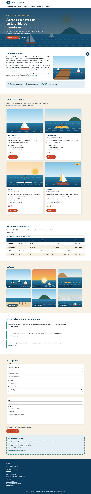
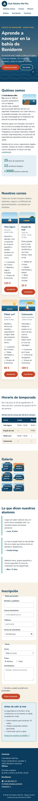

- UP
- UP3
- Criterios
- RA2 · 2h
- Duración
- 2 sesiones
- Agrupamiento
- Individual
- Entrega
- Aules · ZIP + URL del repositorio
- Tipo
- Desarrollo · formativa
Objetivos
- Convertir una lista de enlaces en una barra de navegación accesible.
- Elegir el valor de
positionadecuado (relative,absolute,fixed,sticky) y explicar respecto a qué se coloca la caja. - Personalizar viñetas con
list-style,::markery::before. - Hacer que el texto rodee una imagen con
floaty contener el flotante. - Evitar que una tabla ancha rompa la página con
overflow.
Recursos
- Punto de partida: tu PP 3.2. La serie entera trabaja sobre un único fichero HTML, la web del Club Náutico Mal Pas (descargar en ZIP), que no se modifica: cada práctica añade una capa a la misma hoja
css/estilos.css. - Teoría de la UP3, sección 7 (diapositivas 51 – 57).
- Laboratorio CSS: listas y menús, position y float y overflow.
- Plantilla LEEME-plantilla.md.
Resultado esperado
Así debe quedar la página al terminar esta práctica. Desplaza las capturas para verla entera.


1Continúa tu web
Copia la carpeta de tu práctica anterior como lmsgi/UP3/PP3.3/ en tu repositorio y sigue trabajando sobre la misma hoja css/estilos.css. No cambies el HTML. Si la práctica anterior no te funciona, pide al profesor su hoja de estilos para no quedarte atrás.
2El menú
Quita las viñetas y los márgenes de .menu ul, coloca los li en línea con display: inline-block (en la PP 3.4 lo cambiarás por Flexbox) y convierte cada enlace en una «píldora»: display: block, relleno, border-radius: 999px, color marino, seminegrita y sin subrayado. Al pasar el ratón, fondo arena.
Prueba las combinaciones en el laboratorio de listas y menús.
3Cabecera fija al hacer scroll
Haz que .cabecera se quede pegada arriba con position: sticky, top: 0, un z-index para que pase por encima del contenido y una sombra suave. Después pulsa un enlace del menú: el título de la sección queda tapado por la cabecera. Arréglalo así:
section[id],
footer[id] {
scroll-margin-top: 7.5rem;
}4Saltar al contenido
La página empieza con un enlace .saltar para quien navega con teclado. Escóndelo fuera de la pantalla con position: absolute y top: -100px, y haz que aparezca arriba a la izquierda cuando recibe el foco (.saltar:focus). Compruébalo recargando la página y pulsando Tab.
5La etiqueta «Nuevo»
La tarjeta del catamarán tiene un span.etiqueta. Colócala en la esquina superior derecha de su tarjeta con position: absolute, top y right, fondo --sol, texto marino, mayúsculas pequeñas y forma de píldora.
Para que se coloque respecto a la tarjeta y no respecto a la página, la tarjeta necesita position: relative. Quítaselo un momento, mira dónde va la etiqueta y explícalo en el LEEME.md. Lo puedes ver en directo en el laboratorio de position.
6Viñetas personalizadas
- Lista de cada tarjeta: sin viñeta (
list-style: none,padding: 0) y con una marca «✓» turquesa creada conli::before. - Lista del aviso de seguridad: viñeta cuadrada (
list-style-type: square) en coral conli::marker. - Lista
.redesdel pie y cifras.datos: sin viñetas. Las tres cifras, de momento, en línea coninline-blocky un margen a la derecha.
7La foto que el texto rodea
Haz que .nosotros__foto flote a la derecha con float: right, un 40 % de ancho y margen a la izquierda y abajo para que el texto no se pegue. Borra la regla de la PP 3.2 que la ponía en bloque.
Si la foto es más alta que el texto, se sale de su sección. Haz que el contenedor la envuelva con display: flow-root y que las cifras empiecen siempre debajo con clear: both:
#nosotros .contenedor {
display: flow-root;
}8La tabla que no rompe la página
Reduce la ventana a 360 px: la tabla del horario provoca scroll horizontal en toda la página. Su envoltorio .tabla-desplazable debe desplazarse por dentro con overflow-x: auto; dale además borde y esquinas redondeadas. Compara los valores de overflow en el laboratorio de float y overflow.
9Pie de foto y botón «volver arriba»
- Coloca el
figcaptionde la galería encima de la foto, abajo a la izquierda, como una píldora marino semitransparente (rgb(11 60 93 / 85%)). Sustituye la regla de la PP 3.2. ¿Qué elemento necesitaposition: relative? - El enlace
.subirqueda fijo en la esquina inferior derecha de la ventana (position: fixed), como un círculo marino de 3rem con la flecha centrada (line-height: 3rem,text-align: center) y coral al pasar el ratón.
10Prueba con teclado y valida
Recorre toda la página con Tab: se ve el foco en cada enlace, el enlace «Saltar al contenido» aparece y la cabecera fija no tapa nada. 0 errores en los validadores. Commit: PP3.3: menú y posicionamiento.
Niveles de realización
Básico
Pasos 1 – 3, 5, 7 y 10.
Estándar
Todos los pasos, con las respuestas del LEEME.md.
Ampliación
Haz que la fila de cabecera de la tabla se quede fija al desplazarla en vertical (position: sticky en thead th, dando una altura máxima al envoltorio) y explica qué hace z-index y por qué la cabecera de la página necesita uno.
Antes de entregar, comprueba que…
- El menú es una lista sin viñetas con enlaces en forma de píldora y estado
:hover. - La cabecera se queda arriba al hacer scroll y no tapa los títulos al saltar a una sección.
- El enlace «Saltar al contenido» solo aparece con el foco.
- La etiqueta «Nuevo» está en la esquina de su tarjeta.
- La foto de «Quiénes somos» flota a la derecha y no se sale de su sección.
- A 360 px la página no tiene scroll horizontal: solo se desplaza la tabla.
- El botón «volver arriba» está siempre visible en la esquina.
- Validadores CSS y HTML: 0 errores.
- Declaración de uso de IA en
LEEME.md.
Entrega
Comprime la carpeta PP3.3 (con index.html, css/, img/ y LEEME.md) como PP3.3_Apellido_Nombre.zip, súbela a Aules y escribe en el comentario la URL de tu repositorio.
Uso de inteligencia artificial. Puedes usar asistentes de IA para entender un error o resolver una duda, pero no para hacer la práctica por ti. Si los usas, decláralo en el fichero LEEME.md de tu entrega (qué herramienta, para qué y qué cambiaste tú). Debes poder explicar y defender todo lo que entregues (instrumento IE6). Presentar código generado sin declararlo supone un 0 en la práctica (PD, apartado 6.5).
Evaluación
Práctica formativa de la serie progresiva de la UP3: no tiene nota propia, se revisa en clase con la lista de comprobación y prepara las prácticas calificables (PR 3.1 – 3.5) y el Proyecto 3. Trabaja el criterio 2h del RA2. El profesor puede pedirte que expliques cualquier regla de tu hoja (IE6).